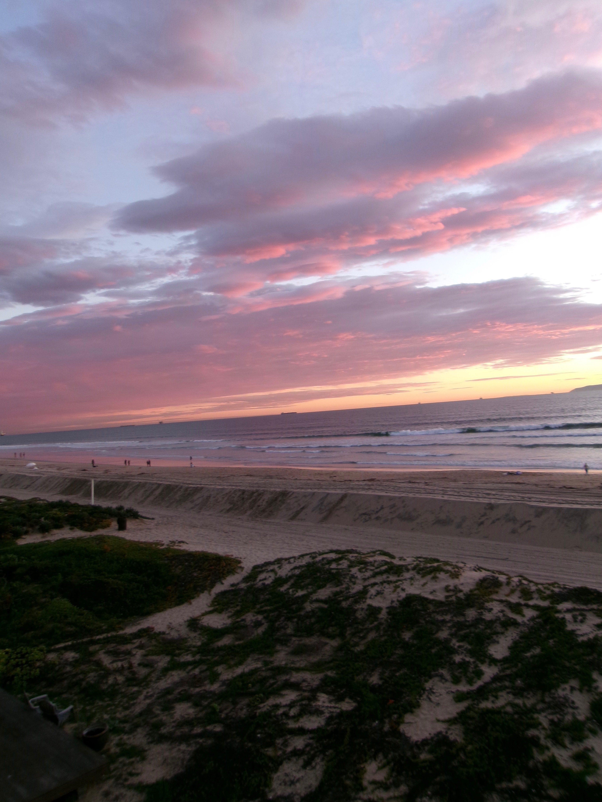

California is a state on the western side of the US that borders the Pacific Ocean. You can go visit the many miles of beaches, Disneyland, explore cities like Los Angeles and San Francisco, or enjoy the beautiful national parks. California also has great food and shopping places all across the state. With so many different activites, California is a fun place for everyone.

New York is a state in the northeastern United States. Located along the Atlantic Ocean, it has many different landscapes like mountains, forests, lakes, and beaches. New York City is one the most popular cities, known for Times Square, Central Park, and the Statue of Liberty.


Hawaii is a cluster of islands located in the Pacific Ocean southwest of mainland United States. It is known for its beautiful beaches, mountains, and weather. Hawaii is a population destination as people can swim, hike, and enjoy the scenery.